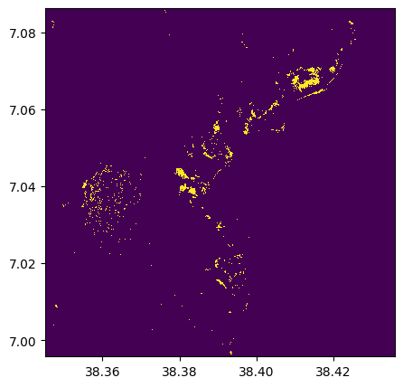
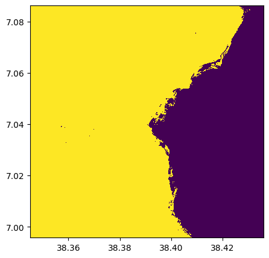
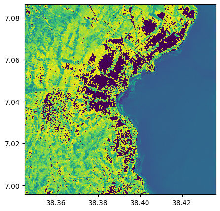

import rastereasy
name_im='./data/demo/sentinel.tif'
image=rastereasy.open(name_im)
Make some boolean tests on image
1) higher, lower, equal, … (>, <, ==)
All classical operations are possible (<, <= , ==, …), between two Geoimages, or between a Geoimage and a number
# Example with >= with a number
im_1500=(image>=1500)
im_1500.info()
- Size of the image:
- Rows (height): 1000
- Cols (width): 1000
- Bands: 12
- Spatial resolution: 10.0 meters / degree (depending on projection system)
- Central point latitude - longitude coordinates: (7.04099599, 38.39058840)
- Driver: GTiff
- Data type: bool
- Projection system: EPSG:32637
- Nodata: 0
- Given names for spectral bands:
{'1': 1, '2': 2, '3': 3, '4': 4, '5': 5, '6': 6, '7': 7, '8': 8, '9': 9, '10': 10, '11': 11, '12': 12}
# Visu of one band
im_1500.visu(2)

# Example with == and a number
test_equal = (image==im_1500)
test_equal.info()
- Size of the image:
- Rows (height): 1000
- Cols (width): 1000
- Bands: 12
- Spatial resolution: 10.0 meters / degree (depending on projection system)
- Central point latitude - longitude coordinates: (7.04099599, 38.39058840)
- Driver: GTiff
- Data type: bool
- Projection system: EPSG:32637
- Nodata: -32768.0
- Given names for spectral bands:
{'1': 1, '2': 2, '3': 3, '4': 4, '5': 5, '6': 6, '7': 7, '8': 8, '9': 9, '10': 10, '11': 11, '12': 12}
# Example with != and a number
test_inequal = (image!=im_1500)
test_inequal.info()
- Size of the image:
- Rows (height): 1000
- Cols (width): 1000
- Bands: 12
- Spatial resolution: 10.0 meters / degree (depending on projection system)
- Central point latitude - longitude coordinates: (7.04099599, 38.39058840)
- Driver: GTiff
- Data type: bool
- Projection system: EPSG:32637
- Nodata: 0
- Given names for spectral bands:
{'1': 1, '2': 2, '3': 3, '4': 4, '5': 5, '6': 6, '7': 7, '8': 8, '9': 9, '10': 10, '11': 11, '12': 12}
# Example with <= between two Geoimages
# For the example, we extract two bands (number 4 and 8) and compare them
band4=image.select_bands('4')
band8=image.select_bands('8')
band4_lowerthan_8 = (band4 < band8)
band4_lowerthan_8.info()
band4_lowerthan_8.visu()
- Size of the image:
- Rows (height): 1000
- Cols (width): 1000
- Bands: 1
- Spatial resolution: 10.0 meters / degree (depending on projection system)
- Central point latitude - longitude coordinates: (7.04099599, 38.39058840)
- Driver: GTiff
- Data type: bool
- Projection system: EPSG:32637
- Nodata: 0
- Given names for spectral bands:
{'4': 1}

And so on …
im=image.numpy_channel_last()
print(im.shape)
(1000, 1000, 12)
2) Isnan
isnan() is directly implemented with image.isnan()
imnan = image.isnan()
imnan.info()
- Size of the image:
- Rows (height): 1000
- Cols (width): 1000
- Bands: 12
- Spatial resolution: 10.0 meters / degree (depending on projection system)
- Central point latitude - longitude coordinates: (7.04099599, 38.39058840)
- Driver: GTiff
- Data type: bool
- Projection system: EPSG:32637
- Given names for spectral bands:
{'1_isnan': 1, '2_isnan': 2, '3_isnan': 3, '4_isnan': 4, '5_isnan': 5, '6_isnan': 6, '7_isnan': 7, '8_isnan': 8, '9_isnan': 9, '10_isnan': 10, '11_isnan': 11, '12_isnan': 12}
3) change value
the function image.where() is similar than np.where()
help(image.where)
Help on method where in module rastereasy:
where(condition, value1, value2) method of rastereasy.Geoimage instance
Select values based on a condition, similar to numpy.where().
This method allows for conditional operations, selecting values from
`value1` where `condition` is True, and from `value2` where it's False.
Parameters
----------
condition : Geoimage
Boolean mask indicating where to select values from `value1`
value1 : Geoimage or scalar
Values to use where condition is True
value2 : Geoimage or scalar
Values to use where condition is False
Returns
-------
Geoimage
New Geoimage containing the result of the conditional selection
Examples
--------
>>> # Create a cloud-free composite from two images
>>> cloud_free = image1.where(cloud_mask, image2, image1)
>>>
>>> # Threshold an image
>>> thresholded = image.where(image > 100, 255, 0)
im_change100=image.where(image>=1500,3,image)
im_change100.info()
im_change100.visu(3)
- Size of the image:
- Rows (height): 1000
- Cols (width): 1000
- Bands: 12
- Spatial resolution: 10.0 meters / degree (depending on projection system)
- Central point latitude - longitude coordinates: (7.04099599, 38.39058840)
- Driver: GTiff
- Data type: int16
- Projection system: EPSG:32637
- Nodata: -32768.0
- Given names for spectral bands:
{'1': 1, '2': 2, '3': 3, '4': 4, '5': 5, '6': 6, '7': 7, '8': 8, '9': 9, '10': 10, '11': 11, '12': 12}

im_change_nan=image.where(image.isnan(),0,image)
im_change_nan.info()
- Size of the image:
- Rows (height): 1000
- Cols (width): 1000
- Bands: 12
- Spatial resolution: 10.0 meters / degree (depending on projection system)
- Central point latitude - longitude coordinates: (7.04099599, 38.39058840)
- Driver: GTiff
- Data type: int16
- Projection system: EPSG:32637
- Nodata: -32768.0
- Given names for spectral bands:
{'1': 1, '2': 2, '3': 3, '4': 4, '5': 5, '6': 6, '7': 7, '8': 8, '9': 9, '10': 10, '11': 11, '12': 12}